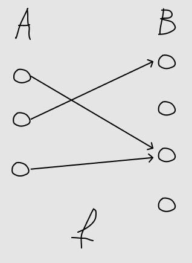
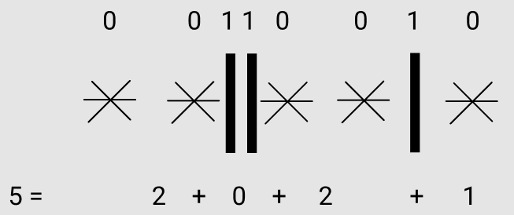
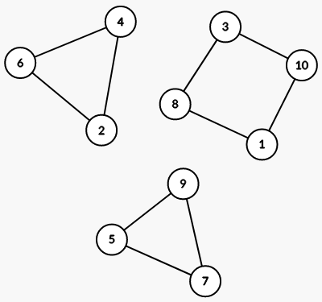

Elemente de Combinatorica
autor: Bogdan Iordache
Combinatorica este o ramura a matematicii care se ocupa cu studiul structurilor finite si al proprietatilor acestora. Este “unealta” care sta la baza rezolvarii problemelor de numarare.
Produs cartezian si numarare de functii
Fie si doua multimi finite.
Definim produsul cartezian al acestor multimi astfel:
De exemplu:
Cu alte cuvinte, produsul cartezian al doua multimi ( si ) este multimea de perechi construite punand elemente din pe prima pozitie si elemente din pe a doua pozitie. Astfel imperechem fiecare element din cu fiecare element din .
Consideram acum multimi: . Produsul cartezian al multimi este multimea de -tupluri in care pe prima pozitie avem element din , pe a doua pozitie avem element din s.a.m.d.
Intrebare: Cate elemente are multimea ? Dar ?
O functie atribuie fiecarui element
din un element din (nu neaparat in mod
unic).

Intrebare: Cunoscand multimile si , cate astfel de functii
exista?
Notam
si . O functie de la la este echivalenta cu un
-tuplu de elemente din
multimea . De ce?
Daca consideram si si un -tuplu (, format din elemente din ( sunt indici de la la , nu neaparat distincti), putem vedea imediat ca acestui tuplu ii putem asocia in mod unic o functie , cu .
Deci pentru a numara functiile, putem numara tuplurile. Insa aceste tupluri nu sunt altceva decat elementele produsului cartezian cu termeni , al carui cardinal este .
In concluzie avem un total de functii de la la .
Aplicatie Fie o multime cu elemente . Cate submultimi are aceasta multime?
Putem interpreta constructia unei submultimi astfel: pentru fiecare element din am doua optiuni, fie aleg sa nu adaug acel element la submultimea mea (), fie il adaug ().
Observam astfel ca o submultime nu este altceva decat o functie care atribuie fiecarui element din o valoare din multime . Cum numarul acestor functii este , acesta este si numarul de submultimi.
Permutari
Permutarile unei multimi se definesc ca toate posibilitatile de a aranja toate elementele multimii intr-un sir.
De exemplu, permutarile multimii sunt:
Intrebare: Cate permutari are o multime cu elemente?
Vom raspunde la aceasta intrebare printr-o serie de mai multe intrebari si raspunsuri :)
- in cate moduri pot alege primul element din permutare? R: in moduri, pot incepe permutarea cu orice element din
- avand fixat primul element, in cate moduri pot alege cel de-al doilea element? R: in
moduri, intrucat nu mai am voie sa
il folosesc pe primul
- avand fixate primele elemente, in cate moduri pot alege cel de-al -lea element? R: intr-un singur mod, intrucat nu mai am voie sa folosesc niciunul din cele elemente deja fixate.
Avem deci numarul total de permutari egal cu . Acest numar se mai noteaza cu .
Aranjamente
Fie o multime cu elemente si un numar natural . Un aranjament de dimensiune al multimii este orice sir de elemente distincte din aceasta multimie.
De exemplu, aranjamentele de dimensiune ale multimii sunt:
Numarul aranjamentelor de dimensiune ale unei multimi cu elemente se mai noteaza (se citeste "aranjamente de , luate cate ").
Intrebare: Pentru si date, cate astfel de
aranjamente exista?
Pentru a gasi numarul de aranjamente vom parcurge aceeasi pasi ca la numarul de permutari, oprindu-ne insa
la cea de -a intrebare:
- in cate moduri pot alege primul element din aranjament? R: in moduri, pot incepe aranjamentul cu orice element din
- avand fixat primul element, in cate moduri pot alege cel de-al doilea element? R: in
moduri, intrucat nu mai am voie sa
il folosesc pe primul
- avand fixate primele elemente, in cate moduri pot alege cel de-al -lea element? R: in moduri, intrucat nu mai am voie sa folosesc niciunul din cele elemente deja fixate.
Avem astfel: .
Combinari
O combinare de dimensiune a unei multimi cu elemente este o submultime de cardinal a acesteia.
De exemplu, combinarile de dimensiune ale multimii sunt:
Numarul acestor combinari se noteaza si se citeste "combinari de luate cate ".
Intrebare: Pentru si date, cate astfel de
combinari exista?
Pentru a rezolva aceasta problema, trebuie sa vedem care este legatura dintre combinari si aranjamente. La
aranjamente ordinea elementelor alese conteaza, pe cand la combinari, nu.
si sunt aranjamete diferite, dar sunt aceeasi combinare.
Fiecarei combinari ii putem asocia in mod unic un numar fix de aranjamente, pe care le putem genera permutand in toate modurile posibile elementele combinarii. Avem astfel ca pentru o combinare putem genera aranjamente. Cum un aranjament poate fi generat de o singura combinare, avem ca numarul de aranjamente este de de ori mai mare decat numarul de combinari.
Asadar,
Aplicatie La un turneu individual de tenis participa N concurenti. Stim ca fiecare jucator
va desfasura cate un meci cu fiecare alt jucator. Cate meciuri vor avea loc?
R:
(de ce?)
Aplicatie Cate siruri binare de biti au exact biti de ?
R:
(de ce?)
Cum implementam calculul acestor valori?
Toate formulele discutate duc deobicei la numere foarte mari (de exemplu, ). In probleme veti intalni de cele mai multe ori o exprimare asemanatoare cu: “intrucat raspunsul poate deveni foarte mare, returnati restul impartirii acestuia la un numar MOD”.
Numarare de functii / produs cartezian
In acest caz, vrem sa calculam formula .
Varianta :
int res = 1;
for (int i = 1; i <= n; i++)
res = (res * m) % MOD;
Acest calcul se poate face mai rapid in complexitate , insa pentru aceasta tehnica trebuie sa revizuiti materialul de la capitolul “Divide et Impera” :) .
Numarul de permutari
Vrem sa calculcam . Nimic mai simplu decat o implementare in :
int res = 1;
for (int i = 1; i <= n; i++)
res = (res * i) % MOD;
Numarul de aranjamente
Vrem sa calculcam .
Problema la acest calcul este operatia de impartire. Reamintim urmatoarele identitati pentru calculul cu
resturi:
- pentru operatia de scadere, putem mereu sa ne folosim de faptul ca , pentru intreg pozitiv
Insa la impartire nu putem spune ca si dau acelasi rezultat (incercati de exemplu ).
Exista tehnici pentru a calcula restul impartirii pentru fractii unde cunoastem doar resturile numaratorului si numitorului. Acestea insa depasesc pentru moment scopul acestei prezentari, dar daca doriti sa investigati mai departe, un punct bun de plecare este problema Invers modular de pe infoarena si indicatiile de rezolvare de aici.
Revenind la aranjamente, formula ne permite totusi sa o calculam usor in :
int res = 1;
for (int i = n - m + 1; i <= n; i++)
res = (res * i) % MOD;
Numarul de combinari
Vrem sa calculcam .
Aici din pacate nu mai avem o metoda simpla de a scapa de impartire, insa ne vom folosi de urmatoarea
identitate:
Demonstratie identitatii este imediata (se inlocuiesc formulele si se aduce la acelasi numitor in membrul
drept).
Aceasta formula ne permite sa calculam matricea cu semnificatia . Putem astfel calcula toate combinarile cu .
C[0][0] = 1 //combinari de 0 luate cate 0 = 1 (prin conventie)
for (int i = 1; i <= n; i++)
for (int j = 0; j<= i; j++)
C[i][j] = (C[i-1][j] + C[i-1][j-1]) % MOD;
cout << C[n][m];
Aceasta tehnica mai poarta numele de Triunghiul lui Pascal. Un exemplu de calcul gasiti mai
jos:

ATENTIE!! Aveti girja la calculele care pot duce la overflow. Atunci cand calculati
(a*b)%MOD, chiar daca a, b si MOD sunt de tip
int, inmultirea din paranteza poate depasi limita de .
Un truc comun este de a forta calculul din paranteza sa fie facut pe tipul de date long long
inmultind la inceput cu literalul 1LL (numarul dar pe tipul long long):
(1LL * a * b) % MOD.
Probleme propuse
1. Munte5 (infoarena)
Vom incepe cu cateva observatii care garanteaza existenta a macar unei structuri de munte care se poate forma:
- valoarea maxima trebuie sa fie unica, altfel daca am avea de exemplu doua valori maxime, una nu ar fi vizibila din stanga, in timp ce cealalta nu ar fi vizibila din dreapta, fiind obturata de perechea ei.
- valoarea maxima ne separa sirul astfel incat la stanga ei trebuie sa avem un sir strict crescator, iar la dreapta unul strict descrescator; de aici observam ca daca o valoare apare de doua ori suntem obligati sa ii punem o aparitie in partea stanga, iar cealalalta aparitie in partea dreapta; daca o valoare apare de cel putin ori atunci nu avem solutie (suntem obligati sa avem macar doua aparitii ale ei fie in stanga, fie in dreapta, astfel nu mai putem obtine un sir strict monoton in acea parte).
Odata ce stabilim ce valori punem in stanga maximului si ce valori punem in dreapta maximului structura de munte este unic determinata.
Pentru valorile care apar de doua ori nu avem ce decizie sa luam, am vazut mai devreme ca una dintre ele ajunge in partea stanga, iar cealalta in partea dreapta. Notam cu unic numarul de valori care apar o singura data in sirul dat la input (cu exceptia valorii maxime!). Putem alege acum orice submultime a acestora sa fie pusa in stanga maximului, iar complementara ei sa fie pusa in dreapta. Numarul de moduri de a face acest lucru este chiar numarul de submultimi ().
Atentie la cazul in care toate valorile din sirul de la input apar o singura data. Formula de mai sus va numara si cazul in care maximul este primul element al muntelui (submultimea aleasa pentru partea stanga este submultimea vida), sau ultimul (submultimea aleasa pentru partea stanga este multimea tuturor valorilor), aceste doua cazuri trebuie scazute de la rezultat. Daca avem cel putin o valoare cu doua aparitii, acest caz particular nu mai apare, deoarece avem garantat ca de-a stanga si de-a dreapta maximului avem cel putin o valoare.
2. Cod2 (infoarena)
Folosim urmatoarele notatii:
: numarul de litere
distincte din sirul de la intrare
: numarul de litere
distincte care apar o singura data in sirul de intrare
: numarul de litere
distincte care apar de cel putin doua ori in sirul de intrare
Evident
Vom imparti numararea codurilor in cele doua cazuri descrise in problema.
a. pentru a numara cate coduri de lungime cu toate literele distincte putem forma, este echivalent cu a numara aranjamentele de lungime ale multimii de litere. Astfel avem astfel de coduri.
b. pentru cazul in care in cod avem exact o litera care apare pe doua pozitii, numararea o putem face impartind pasii independenti care duc la constructia unui astfel de cod:
- fixam litera care apare de doua ori in cod (in cate moduri putem face acest lucru?.. in moduri, oricare din aceste litere poate fi aleasa sa apara de doua ori)
- avand aceasta litera fixata, alegem cele doua pozitii din totalul de pe care o vom plasa, acest lucru poate fi facut in moduri (ordinea pozitiilor alese nu conteaza, daca alegem pozitiile “3 si 5” sau “5 si 3” am facut de fapt aceeasi alegere)
- mai avem acum de completat restul de pozitii cu litere distincte; mai avem la dispozitie litere inca nefolosite, asadar putem completa restul pozitiilor in moduri.
Din a. si b. obtinem ca numarul total de coduri posibile este:
$
3. Stars and Bars (pbinfo)
Problema este echivalenta cu a numara in cate moduri putem scrie numarul ca suma de valori naturale (). De exemplu, pentru numarul si urmatoarele sunt cateva exemple de astfel de scrieri:
Cum putem numara aceste scrieri. Va vine sa credeti sau nu, aceasta problema se rezolva cu ajutorul combinarilor. Pentru a face explicatia mai usoara si pentru ca “o poza face cat o mie de cuvinte”, mai jos puteti vedea cum interpretam o astfel de scriere ca un numar in baza 2:

Vedem cum scrierea lui ca suma de numere poate fi vizualizata
ca un sir de obiecte separate de bare verticale. Daca notam obiectele
cu si barele cu obtinem o corespondenta de unu-la-unu
intre aceste scrieri si sirurile de biti cu exact biti de .
Dar cate astfel de siruri exista?
4. Suma si numarul divizorilor (infoarena)
a. Numarul de divizori Consideram descompunerea lui in factori primi:
Un divizor al lui va arata astfel:
Cu alte cuvinte, divizorul nu are voie sa contina in descompunerea sa alti factori primi decat , iar exponentul acestora trebuie sa fie mai mic sau egal cu cel din decompunerea lui (posibil si , intrucat divizorul poate sa nu contina anumiti factori primi din descompunerea lui ).
Ramane acum sa numaram in cate moduri putem fixa sirul . Intrucat pentru
avem posibilitati (numerele de la la ),
pentru
avem posibilitati s.a.m.d, obtinem formula
pentru numarul de divizori:
b. Suma divizorilor Consideram aceeasi descompunere pentru . Formula de mai jos ne da suma divizorilor:
Demonstratia este faptul ca daca am desface parantezele fiecare termen al sumei finale ar fi un produs intre cate un element din fiecare paranteza. Cum in fiecare paranteza avem factori primi la puteri mai mici sau egale decat cea cu care apar in descompunerea lui , toti termenii pe care ii obtinem reprezinta divizorii lui .
Ca implementare, dupa ce determinam descompunerea lui putem calcula fiecare paranteza separat, apoi inmultim rezultatele.
Se poate folosi si faptul ca in paranteze avem sume de progresii geometrice, folosind acest fapt putem reduce
formula la:
Insa rezultatul cerut de problema este restul impartirii acestei formule la iar, asa cum am vazut mai devreme,
faptul ca termenii produsului sunt fractii nu ne ajuta sa le calculam restul impartirii fara a folosi
tehnici legate de inversul modular.
Cu toate acestea, intrucat trebuie sa determinam oricum descompunerea lui , calculul primei forme nu ne afecteaza complexitatea finala.
5. Sandokan (infoarena)
Observam ca elementul maxim din sir va ramane tot timpul in configuratia finala. Datorita acestul fapt, la fiecare pas putem alege elementul maxim impreuna cu oricare alte elemente pe care le vom elimina. Deci daca configuratia finala contine elemente, unul din cele P elemente este elementul maxim, iar restul de le putem alege in toate modurile posibile.
Stiind ca la fiecare pas, se elimina elemente si ne oprim atunci cand numarul de elemente devine mai mic decat , putem gasi usor formula pentru .
Cu observatiile de mai sus, aflam ca raspunsul la problema noastra este .
6. Multiplu2 (infoarena)
Observam usor ca un -sir trebuie sa contina doar divizori ai lui , altfel cmmmc-ul acestora nu va fi . Insa aceasta conditie nu este si suficienta, ci ne garanteaza doar ca cmmmc-ul -sirului il divide pe .
Fir un divizor prim al lui care apare la puterea in descompunerea lui in factori primi.
In cate moduri putem fixa exponentul lui in descompunerea celor numere din sir? Intrucat fiecare numar din sir il divide pe , putem sa ii fixam exponentul lui orice valoare intreaga din intervalul (in total variante). Avem variante pentru primul numar, variante pentru cel de-al doilea s.a.m.d., deci in total avem variante de a distribui exponentii lui printre numerele din -sir.
Problema este ca in aceasta formula numaram si cazurile in care toate cele numere primesc exponenti strict mai mici decat , iar daca pentru un astfel de -sir calculam cmmmc-ul, acesta va avea in descompunere la o putere mai mica decat , deci nu poate fi egal cu .
Numarul acestor cazuri gresite il putem afla similar, limitand acum exponentii doar la intervalul , deci in total am avea astfel de cazuri.
Am obtinut ca pentru un factor prim al lui () care apare la puterea in descompunerea lui in factori primi avem variante de a seta exponentul lui in numerele din -sir, astfel incat garantam ca in descompunerea cmmmc-ului sirului, apare tot la puterea .
Numararile pe care le facem pentru un factor prim si pentru un factor prim sunt independente (ce exponenti setam pentru numerelor din -sir nu influenteaza ce exponenti setam pentru ). Astfel la numarul total de posibilitati aceste cazuri se vor inmulti.
Obtinem acum formula finala pentru numarul de -siruri corecte: , unde are descompunerea in factori primi .
Pentru a obtine de puncte, ridicarile la putere din formula trebuie facute in complexitate folosind divide et impera.
7. Tamplar (infoarena)
Problema ne cere de fapt cate ordonari putem realiza pentru cele taieturi. Ni se cere deci numarul de permutari de dimensiune , adica .
Dificultatea problemei sta in faptul ca nu se mai cere rezultatul ca rest la impartirea cu un numar, ci se doreste valoarea exacta. Pentru aceasta, factorialul trebuie calculat folosind o reprezentare a numerelor cu oricat de multe cifre.
Un astfel de numar, pe care il numim deobicei numar “mare”, poate fi reprezentat usor folosind un vector de cifre. Fie acest vector, prin conventie putem considera ca contine numarul de cifre al numarului “mare”, contine cea mai nesemnificativa cifra (cea mai din dreapta), a doua cea mai nesemnificativa, s.a.m.d. pana la care este cea mai semnificativa (prima) cifra a numarului.
Avand aceasta reprezentare, ne este usor acum sa implementam inmultirea dintre un numar “mare” si un numar “mic” (prin mic se intelege orice numar pe care il salvati intr-o variabila simpla). In tabelul de mai jos aveti un exemplu in care inmultim numarul “mare” cu numarul “mic” .
| H[0] | H[1] | H[2] | H[3] | H[4] | H[5] | H[6] | |
|---|---|---|---|---|---|---|---|
| initial | 5 | 2 | 7 | 5 | 3 | 1 | |
| pas 1 | 5 | 2 * 12 = 4 + 2 * 10 | 7 | 5 | 3 | 1 | |
| pas 2 | 5 | 4 | 7 * 12 + 2 = 6 + 8 * 10 | 5 | 3 | 1 | |
| pas 3 | 5 | 4 | 6 | 5 * 12 + 8 = 8 + 6 * 10 | 3 | 1 | |
| pas 4 | 5 | 4 | 6 | 8 | 3 * 12 + 6 = 2 + 4 * 10 | 1 | |
| pas 5 | 5 | 4 | 6 | 8 | 2 | 1 * 12 + 4 = 6 + 1 * 10 | |
| pas 6 | 6 | 4 | 6 | 8 | 2 | 6 | 1 |
Obtinem ca rezultatul inmultirii este numarul . Nu am facut altceva decat sa simulam pe acest vector inmultirea de mana. Aceasta ar fi o sugestie de implementare a unei functii care inmulteste un numar mare cu un numar mic:
void Mult(int H[], int X) { // H <- H * X
int T = 0; // transportul (ce "tinem in minte")
for (int i = 1; i <= H[0]; i++) {
H[i] = H[i] * X + T;
T = H[i] / 10;
H[i] = H[i] % 10;
}
while (T) { // cat timp mai exista transport
H[0]++;
H[H[0]] = T % 10;
T = T / 10;
}
}
Mai multe detalii despre lucrul cu numere “mari” puteti gasi in acest articol de pe infoarena, unde sunt detaliate toate operatiile de care ati avea nevoie sa le implementati vreodata.
8. Sistem (infoarena)
Problema ne cere sa numaram in cate moduri putem sa organizam orasele ca o multime de cicluri. Prin ciclu intelgem un mod de a uni o submultime de orase, astfel incat fiecare oras este unit cu alte doua si putem ajunge de la orice oras la orice alt oras din ciclu (imaginati-va ca orasele dintr-un ciclu sunt puse intr-un cerc, iar fiecare oras este unit cu vecinul din stanga si cu vecinul din dreapta sa).
O astfel de organizare pentru orase arata astfel:

Putem obtine o multime de alte configuratii, de exemplu toate orasele de la la puse intr-un singur ciclu: .
Pentru a numara aceste configuratii vom defini urmatorul vector: cu semnificatia in cate moduri putem organiza orase ca cicluri.
Raspunsul la problema noastra se va gasi in .
Sa vedem acum cum arata pentru valori mici ale lui :
- , cu noduri avem o posibilitate de a le organiza ca cicluri (numaram acest caz prin conventie, reprezentand organizarea vida)
- , cu sau noduri nu putem forma niciun ciclu, deci nu avem nicio organizare corecta
- , cu 3 noduri putem forma un singur ciclu.
Pentru a calcula in general trebuie sa gasim o formula de recurenta. Pentru aceasta, sa consideram un fixat:
- putem sa ne fixam de la inceput un nod dintre aceastea si sa stabilim in ce ciclu il vom pune; inainte de toate putem fixa dimensiunea ciclului care contine acest nod (poate fi orice numar intre si ) pe care o notam
- in cate moduri putem alege acum cele noduri care vor fi adaugate in acelasi ciclu cu nodul fixat? Pot fi oricare dintre celelalte noduri, deci in total posibilitati
- acum avem fixate cele noduri ale ciclului ce contine nodul nostru, in cate moduri putem sa le aranjam pe ciclu? Am fi tentati sa spunem (numarul de permutari de dimensiune ), insa lucram pe un ciclu, deci permutari de genul , , si corespund aceluiasi ciclu. Observam de fapt ca pentru orice ciclu ii putem gasi in mod unic permutari de lungime , deci numarul total de aranjari ale nodurilor pe ciclu este
- am fixat tot ce tinea de ciclul ce contine nodul initial, ce facem cu resul de noduri? In cate moduri putem sa le organizam pe ele acum sub forma de cicluri? Aceste posibilitati le avem numarate in .
Obtinem deci recurenta:
Pe care o putem implementa astfel:
// calculam dinainte Fact[i] = i!
// si C[i][j] = combinari de i luate cate j (triunghiul lui Pascal)
D[0] = 1; D[1] = 0; D[2] = 0; D[3] = 1;
for (int i = 4; i <= N; i++) {
D[i] = 0;
for (int k = 3; k <= i; k++) {
D[i] += C[i-1][k-1] * Fact[k-1] * D[i-k];
}
}
Pentru a lua de puncte, calculele de mai sus trebuie facute cu ajutorul operatiilor pe numere mari.